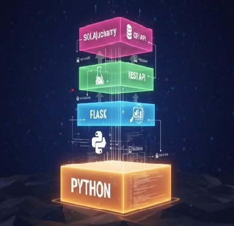
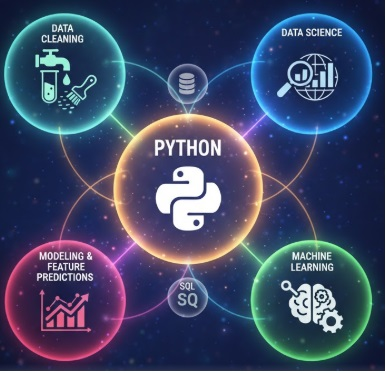

Modernized a legacy store-management workflow into a secure, modular RESTful service using Python and Flask-Smorest.
Containerized with Docker to ensure reproducibility, environment consistency, and test integrity.
AI & Modernization: Demonstrates transition from static logic to service-based architecture.
Governance & Trust: Schema validation, endpoint documentation, containerized testing.

A full-stack web application built from the ground up using
Python,
Flask,
SQLAlchemy,
PostgreSQL,
REST APIs,
JavaScript,
Docker, and
Git/GitHub.
Designed and developed a production-style application with a Python/Flask
backend, relational PostgreSQL database, authenticated users, database
relationships, API endpoints, and interactive frontend dashboards.
Backend:
Python • Flask • Flask-Smorest • SQLAlchemy • Marshmallow • PostgreSQL
Development & Deployment:
REST APIs • Docker • Git/GitHub • Alembic migrations • Render
Application Features:
User authentication • Bible Study Dashboard • Journal Dashboard •
Prayer Dashboard • Categories • User-specific records •
Admin functionality • Published content
Technical Focus:
API design, database architecture, relational data modeling,
authentication, schema validation, migrations, containerization,
debugging, and frontend/backend integration.
Modernization:
Demonstrates the ability to move from traditional enterprise
programming concepts into modern API-driven application architecture.

End-to-end machine learning project using public health data to identify statistically significant
risk factors and generate predictive insights.
AI & Modernization: Feature engineering and supervised learning transform static datasets into predictive intelligence.
VAULTIS: Validated inputs, reproducible notebooks, documented assumptions, no PII.
Leadership Insight: Enables proactive intervention instead of reactive reporting.

Developed a supervised machine learning model to forecast urban transportation demand. By analyzing
weather patterns and temporal data, the model identifies key drivers of ridership for Capital Bikeshare.
Public Sector Impact: Provides data-backed insights for urban infrastructure planning and fleet optimization.
Technical Focus: Multivariate Linear Regression, feature engineering (handling multicollinearity), and time-series data preparation.
Governance: Rigorous EDA and feature selection to ensure model interpretability and statistical validity.

Analyzed U.S. government employment trends using Bureau of Labor Statistics data,
correcting time-series distortions via DAX and date modeling.
Federal Relevance: Policy-ready workforce insights.
Leadership Takeaway: Identified non-cyclical hiring surges and operational implications.

Built an interactive Power BI dashboard analyzing U.S. government employment trends using Bureau of Labor Statistics data, applying DAX measures and date modeling to ensure accurate time-series reporting.
Federal Relevance: Policy-ready workforce monitoring through standardized, reproducible dashboard metrics.
Leadership Takeaway: Enabled leaders to distinguish cyclical fluctuations from structural, non-cyclical hiring patterns and assess operational impact.
Designed executive-facing interactive dashboards translating complex workforce metrics and skill timelines into clear operational insights.
Federal Relevance: Supports leadership briefings and stakeholder communication.
Governance: Standardized metrics, documented assumptions.
Analyzed 40 years of revenue data to highlight the shift from physical to digital formats.
Governance: Cleaned data, validated totals, documented assumptions.
Storytelling: Executive-ready historical context and trend interpretation.

End-to-end Power BI project demonstrating interactive dashboard creation, DAX-based calculated measures, and data modeling. Includes combo charts, tooltips, maps, gauges, and infographics.
Technical Focus: Power BI Desktop, DAX, data modeling, interactive visualizations, and dashboard storytelling.
Governance & Analytics: Validated tables, calculated fields and formatting best practices.
End-to-end BI workflows including Power Query transformations,
data modeling, and KPI-driven reporting.
Governance: Reusable functions, validated transformations, modeling best practices.
Built a full ETL and analytical pipeline using core Python only
(CSV, defaultdict, namedtuple).
Trust: Explicit missing-value handling and reproducible metrics.
I work on the front lines helping customers every day, solving problems and finding solutions.
Alongside that, I’ve built real skills in data analytics—Python, SQL, Tableau, Power BI—and applied them to projects that turn data into insights.
I bring the same focus, persistence, and problem-solving from my customer work to analyzing data.
I’m looking for a role where I can combine hands-on experience with data skills to make an impact.
Skilled in creating professional short videos for TikTok, Reels, and LinkedIn using
Canva for design and animation,
MidJourney for AI-generated visuals,
and Fliki for AI voiceovers and final video assembly.
This skill allows me to communicate insights and concepts in a highly engaging, visual format.
Videos can integrate animated charts, data-driven storytelling, and cinematic AI visuals.
Click to play AI video example on TikTok